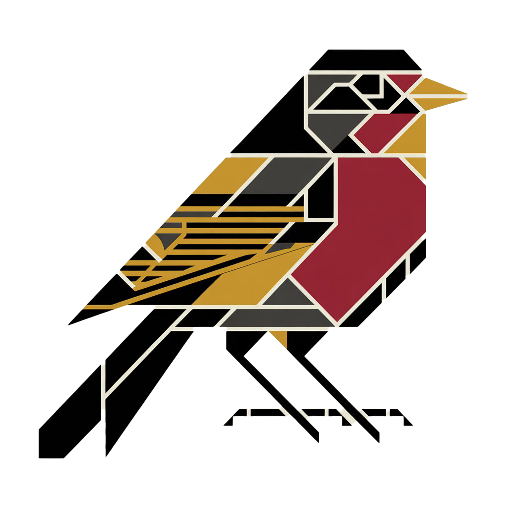

Robink V2
Windows sistem rehberi · SaaS
Kullanıcı adı
Şifre
GİRİŞ YAP
Hesabın yok mu?
Kayıt ol
Yeni Cihaz Eşle
Bu kodu ajanın kurulacağı PC'de çalıştır.
------
10:00 kaldı
Hedef PC'de PowerShell'i aç ve şunu çalıştır:
...
KOMUTU KOPYALA
KAPAT
Robink V2
· Bilgi Bankası
Windows Sistem Rehberi
Bilgi
50
Hızlı Onarım
40
Tümü
90
/
TR
EN
Cihaz seç…
▼
?
📊 ROBINK V2 — TOPLU RAPOR
✕
Tarih Aralığı
Bugün
Son 7 gün
Son 30 gün
Tüm zamanlar
Cihaz
Tüm cihazlar
🔄 Rapor Oluştur
#
Öğe
Cihaz
Durum
Süre
Tarih
🖨 PDF Olarak Kaydet
📱 WhatsApp'ta Paylaş
Komut kopyalandı